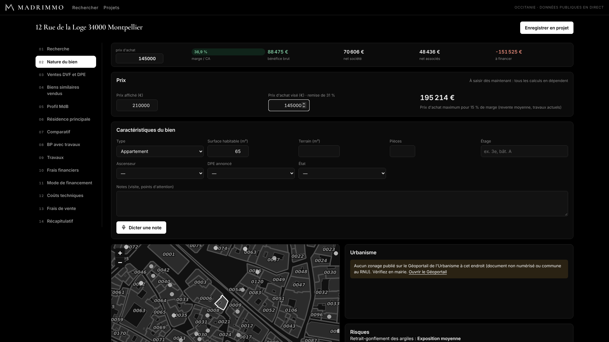
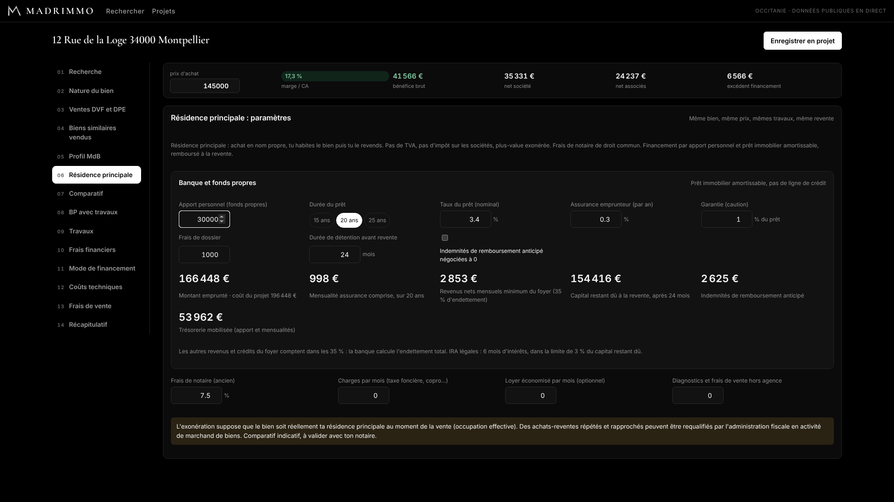
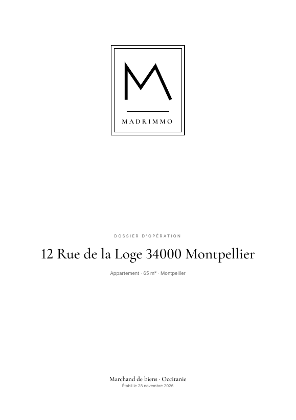
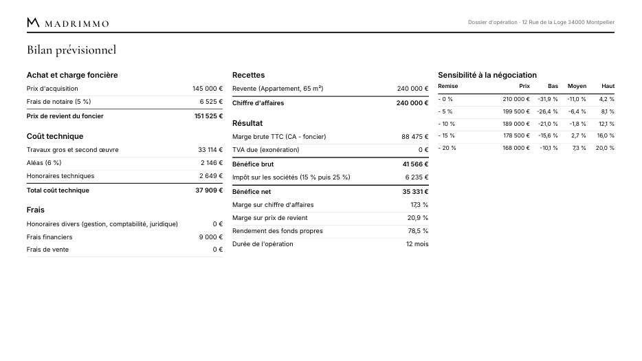
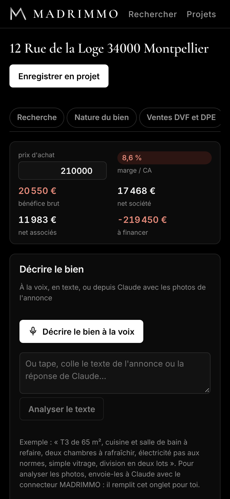

Rechercher
Un bien repéré ?
Adresse, parcelle, annonce ou simple capture d'écran : l'analyse démarre en quelques secondes.

MADRIMMO
Adresse, parcelle, annonce ou simple capture d'écran : l'analyse démarre en quelques secondes.
Cadastre, plan local d'urbanisme, risques et DPE, chargés en direct.

Prix au m² des actes notariés DVF et ventes comparables sur la carte.

« Cuisine et salle de bain à refaire, deux chambres à rafraîchir… » L'onglet Travaux se remplit tout seul.

Forfait au m² pour aller vite, ou devis détaillé avec vos grilles de prix.

Requalification en neuf, DP, Architecte des Bâtiments de France, syndic, réseaux : qui contacter, et quand.


Prix d'achat maximum pour 15 % de marge, et la marge à chaque niveau de remise.

Ligne de crédit marchand ou prêt immobilier sur 25 ans : mensualité, apport et gain net comparés.

Synthèse, bilan, travaux, financement et marché, en PDF portrait ou paysage.



Installée sur l'écran d'accueil du téléphone, pour analyser pendant la visite.


